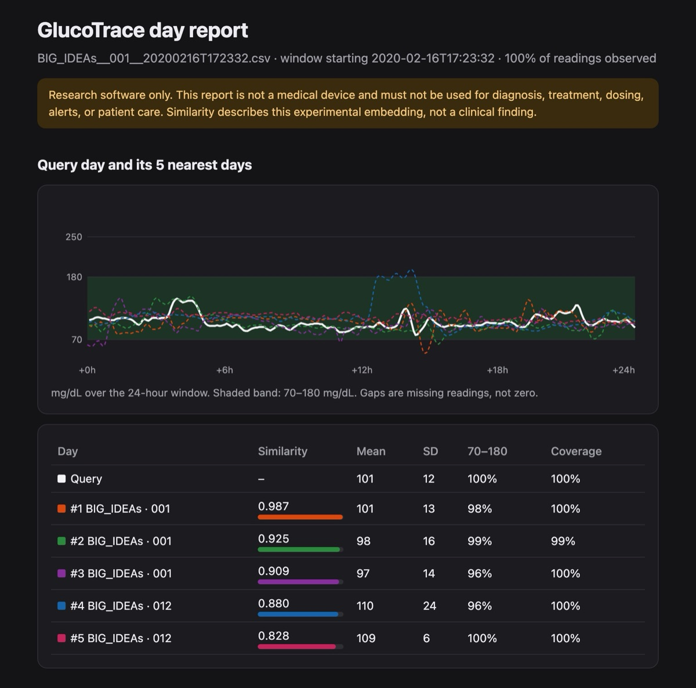

How I evaluated it
- Pre-registered. Thresholds, probes and candidate budgets were declared before training; the test partition is opened once.
- Leakage-resistant. Participant-disjoint splits are pinned by SHA-256, the loader refuses a stale split, and
glucotrace verify-protocol --allre-checks everything. - Stress-tested. With 30% of readings removed at random on new people, median cosine similarity stays at 0.965.
01 · The questionWhat does a glucose day look like, as numbers?
A continuous glucose monitor records a reading every five minutes, which is 288 numbers a day. Researchers who want to ask "which days look like this one?" usually fall back on summary statistics like mean, time in range or variability, and those throw away the shape of the day: when the spikes come, how fast they fall, how flat the night is.
GlucoTrace learns a compact representation of that shape. Two days with similar curves get similar fingerprints, so days can be compared, searched and clustered with ordinary vector maths.
02 · How it worksFrom export file to fingerprint
- ImportA plain
timestamp,glucoseCSV, a Dexcom Clarity export or a FreeStyle Libre LibreView export. Time zones are respected, Low/High readings are handled explicitly, and files whose values contradict the declared unit are rejected. - Canonical dayEach 24-hour window carries an explicit observation mask and gap age. Missing readings stay missing; nothing is interpolated.
- EncodeA small Transformer reads the day and returns 128 numbers. The released checkpoint ignores clock time, so fingerprints describe the curve itself.
- Use itCompare two days by cosine similarity, find the nearest days in a dataset, or build an offline HTML report.

glucotrace report for a public BIG IDEAs day. The top three matches are other days from the same participant.03 · ResultsStable when readings go missing
0.965Median cosine similarity after removing 30% of readings at random, on new people
128Numbers per day, from 288 raw readings
14CLI commands, from
encode to verify-protocol04 · Built to be checkedEvaluation you can verify
- Pre-registered. Thresholds, probes and candidate budgets were written down before training, and the test partition is opened once.
- Leakage-resistant by construction. Participant-level splits are tied to checksummed manifests, and the loader refuses a stale split.
- Verifiable by anyone.
glucotrace verify-protocol --allchecks every published manifest and split against the SHA-256 values in the declaration documents. The tests run the same check on every push. - Small and hackable. CPU training in minutes; the whole package is about 5,000 lines of typed Python.
05 · Run itFour commands
$ pip install glucotrace $ glucotrace download-model # 2 MB, SHA-256 verified $ glucotrace encode my-day.csv --output fingerprint.json $ glucotrace compare monday.csv tuesday.csv # cosine similarity $ glucotrace report my-day.csv --manifest manifest.json --output report.html